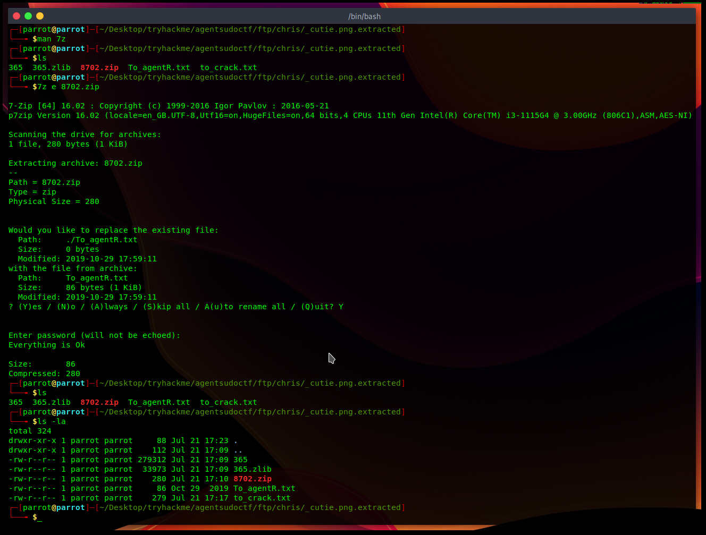
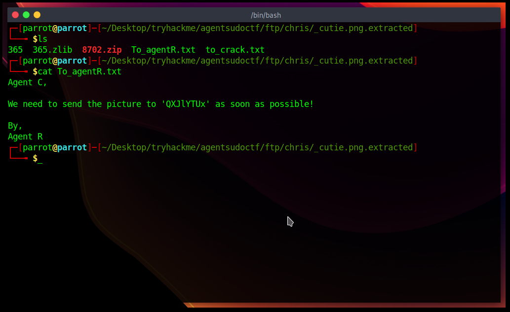

Agent Sudo CTF
Agent Sudo
You found a secret server located under the deep sea. Your task is to hack inside the server and reveal
the truth.
Ennumeration
Let's run nmap for some basic ennumeration to get an idea for what we are working with.
nmap -sC -sV -v -o nmap_scan {ip}
Which gives the following output:
# Nmap 7.93 scan initiated Fri Jun 23 22:15:51 2023 as: nmap -sC -sV -v -o nmap_scan 10.10.67.193
Increasing send delay for 10.10.67.193 from 0 to 5 due to 97 out of 321 dropped probes since last increase.
Increasing send delay for 10.10.67.193 from 5 to 10 due to 11 out of 36 dropped probes since last increase.
Increasing send delay for 10.10.67.193 from 10 to 20 due to 11 out of 30 dropped probes since last increase.
Increasing send delay for 10.10.67.193 from 20 to 40 due to 11 out of 13 dropped probes since last increase.
Increasing send delay for 10.10.67.193 from 40 to 80 due to 11 out of 15 dropped probes since last increase.
Increasing send delay for 10.10.67.193 from 80 to 160 due to 11 out of 13 dropped probes since last increase.
Nmap scan report for 10.10.67.193
Host is up (0.19s latency).
Not shown: 997 closed tcp ports (conn-refused)
PORT STATE SERVICE VERSION
21/tcp open ftp vsftpd 3.0.3
22/tcp open ssh OpenSSH 7.6p1 Ubuntu 4ubuntu0.3 (Ubuntu Linux; protocol 2.0)
| ssh-hostkey:
| 2048 ef1f5d04d47795066072ecf058f2cc07 (RSA)
| 256 5e02d19ac4e7430662c19e25848ae7ea (ECDSA)
|_ 256 2d005cb9fda8c8d880e3924f8b4f18e2 (ED25519)
80/tcp open http Apache httpd 2.4.29 ((Ubuntu))
| http-methods:
|_ Supported Methods: GET HEAD POST OPTIONS
|_http-server-header: Apache/2.4.29 (Ubuntu)
|_http-title: Annoucement
Service Info: OSs: Unix, Linux; CPE: cpe:/o:linux:linux_kernel
Read data files from: /usr/bin/../share/nmap
Service detection performed. Please report any incorrect results at https://nmap.org/submit/ .
# Nmap done at Fri Jun 23 22:17:46 2023 -- 1 IP address (1 host up) scanned in 115.33 seconds
We have ports 21, 22 and 80 open.
Port 21 FTP
Attempting to access the server as an Anonymous user fails. We need to find agent codenames, which will be
the usernames we use to login.
Port 22 SSH
Attempting basic ssh, the sever is obviously password protected.
Port 80
User Agent Shenanigans
Using the User Agent Switcher extension, I
changed my user agent to R
"Are you one of the 25 employees?" including the letter R, it makes it 26 employees. The english
alphabet has 26 letters, so I'm guessing the agent names are these english letter characters. Let me try
change the useragent to the first few characters of the english alphabet.
I get the following page on C
I get the following page on C
Bingo, we now know Agent C's name is Chris. We also know that an Agent J now exists.
However, i tried User Agent J but it leads nowhere.
Let's run gobuster to find more directories on the web server just to be sure we don't miss on anything.
gobuster -u {ip} -w /usr/share/wordlists/dirb/common.txt dir -o dir_scan
Which gives the following directories:
/.hta (Status: 403) [Size: 277]
/.htaccess (Status: 403) [Size: 277]
/.htpasswd (Status: 403) [Size: 277]
/index.php (Status: 200) [Size: 218]
/server-status (Status: 403) [Size: 277]
Nothing meaningful here, so we can now proceed to logging in via FTP again. We know a valid user, Chris.
Their password can be bruteforced with hydra.
I'll now log into the FTP server via the credentials chris:crystal
Success! I list the files in the directory and download them to my system via mget. Reading the
To_agentJ.txt shows that agent R has steganographically embedded Agent J's password in the alien
pictures.
Following are the alien pictures which contain the password; cute-alien.jpg and cutie.png respectively.
Following are the alien pictures which contain the password; cute-alien.jpg and cutie.png respectively.
I tried Steghide and ExifTool on Cutie.png but nothing of use was output. In a
hit-and-trial effort, i ran it through Binwalk which gave me the following:
Each of these files is password protected. John to the rescue!!!!
The password is alien. Who could have known lol.
Anyhow, unzip command still failed to unzip the zipped file for some reason, so a little research later i tried out 7zip
Anyhow, unzip command still failed to unzip the zipped file for some reason, so a little research later i tried out 7zip

I read To_agentR.txt. I didn't want to sit and manually decypher "QXJlYTUx", so I just put it into
cyberchef and let it do it's magic :)

Unless I've missed something so far, I don't know how to contact Area51 that I have their pictures
with me. Soooo im guessing it's a password for something. Now to cracking the other alien
picture.
Steghide asks me for a password, and guess what? It's Area51 yay!
Steghide asks me for a password, and guess what? It's Area51 yay!
I now have another set of credentials, james:hackerrules!. Let's SSH into James.
That works! I have the user flag now. Ill check out Alien_autospy.jpg and then continue to root the
machine.
Root
I'm lazy so i just load linpeas into /dev/shm and let it do it's thing for me.
I have no idea what LXD is so ill just exploit Pkexec instead, it's wayyy easier than researching
something new, especially when both options would basically lead to the same end goal.
In other words, IM LAZY lmaoo
Nope, I was wrong. Pkexec was not a privesc here. However, the sudo version is interesting. It's older
than 1.8.28 making it vulnerable to CVE-2019-14287. This will surely give
me root now
It Worked!!
How many open ports? 3 How you redirect yourself to a secret page? user-agent What is the agent name? chris
FTP password crystal Zip file password alien steg password Area51 Who is the other agent (in full name)? james SSH password hackerrules!
What is the user flag? b03d975e8c92a7c04146cfa7a5a313c7 What is the incident of the photo called? find image source Roswell alien autopsy
CVE number for the escalation CVE-2019-14287 What is the root flag? b53a02f55b57d4439e3341834d70c062 (Bonus) Who is Agent R? DesKel
Yashwardhan ~ 5pid3rh7ck3r